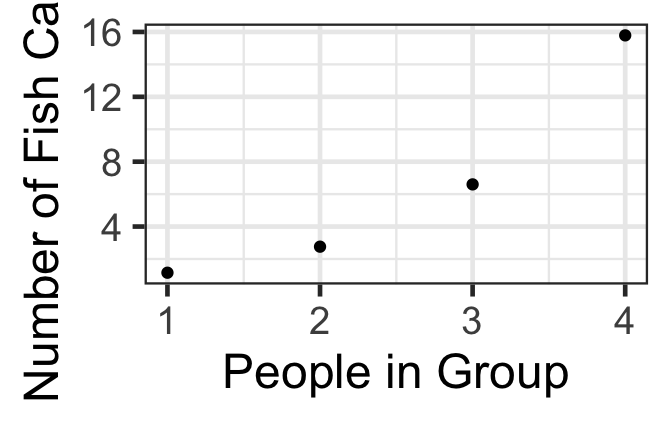

It may not be appropriate to explain the extra zeros via a model for count data with overdispersion (NB or quasi-Poisson) because:
There is too much overdispersion to account for this way
The zeros in the data are of two classes: true zeros (definite absence) and other zeros (might have been a positive count but just happened to be a 0 this time).
12.1 Reference material
On the topic of zero-inflated data (as on many other topics), your book is …terse! I have several copies of Mixed models and extensions for ecology in R if you want to borrow – You may want to check out Chapter 11 in that book.
12.2 Data for Example
The state wildlife biologists want to model how many fish are being caught by fishermen at a state park. Visitors are asked how long they stayed, how many people were in the group, were there children in the group and how many fish were caught. Some visitors do not fish, but there is no data on whether a person fished or not. Some visitors who did fish did not catch any fish so there are excess zeros in the data because of the people that did not fish.
We have data on 250 groups that went to a park. Each group was questioned about how many fish they caught (count), how many children were in the group (child), how many people were in the group (persons), and whether or not they brought a camper to the park (camper).
In addition to predicting the number of fish caught, there is interest in predicting the existence of excess zeros, i.e., the probability that a group caught zero fish. We will use the variables child, persons, and camper in our model. Let’s look at the data.
In class, we created several figures for data exploration. They are not printed here.
One idea was to make a pairs plot to look at possible collinearity. Good idea! But all our predictors are either yes/no or have very small ranges of integers as their values, so it doesn’t prove very informative with our data - feel free to try for yourself to illustrate:
Another idea would be to plot response as a function of possible predictors, to check the linearity conditions of the parts of the model. This could be a good idea, but on the other hand we don’t have any predictors that are unequivocally numerical. (If we had one, we could plot log(count) as a function of the predictor.)
12.4 Collinearity/Multicollinearity?
We might want to check VIFs, but we can’t compute them directly for a ZIP model (fitted later) using vif() from the car package.
However, note: VIFs really depend mainly on the covariates, not the model fitted. We can check them effectively by fitting the Poisson model (and the logistic regression, if we had more than one predictor in that part of the model) and checking its VIFs:
P <-glm(count ~ camper + child + persons, data=zinb, family=poisson)library(car)vif(P)
Call:
zeroinfl(formula = count ~ child + camper + persons | 1, data = zinb,
dist = "poisson")
Pearson residuals:
Min 1Q Median 3Q Max
-1.08778 -0.77677 -0.57757 -0.09894 27.97095
Count model coefficients (poisson with log link):
Estimate Std. Error z value Pr(>|z|)
(Intercept) -0.99805 0.17557 -5.685 1.31e-08 ***
child -1.36091 0.09410 -14.462 < 2e-16 ***
camperYes 0.79561 0.09411 8.454 < 2e-16 ***
persons 0.87214 0.04496 19.398 < 2e-16 ***
Zero-inflation model coefficients (binomial with logit link):
Estimate Std. Error z value Pr(>|z|)
(Intercept) -0.3659 0.1868 -1.958 0.0502 .
---
Signif. codes: 0 '***' 0.001 '**' 0.01 '*' 0.05 '.' 0.1 ' ' 1
Number of iterations in BFGS optimization: 10
Log-likelihood: -776.5 on 5 Df
12.5.2 Zero-inflated NB: one way
We can also use this function to fit a NB model. BUT BEWARE: this is a different parameterization of the NB model than the NB1 and NB2 models we use in glmmTMB() and may be closer to type 1 or type 2 depending on the dataset. You could compare all three NB versions via IC.
Call:
zeroinfl(formula = count ~ child + camper + persons | 1, data = zinb,
dist = "negbin")
Pearson residuals:
Min 1Q Median 3Q Max
-0.66364 -0.54174 -0.42090 -0.03142 20.44992
Count model coefficients (negbin with log link):
Estimate Std. Error z value Pr(>|z|)
(Intercept) -1.6250 0.3294 -4.933 8.09e-07 ***
child -1.7805 0.1920 -9.272 < 2e-16 ***
camperYes 0.6211 0.2358 2.634 0.00844 **
persons 1.0608 0.1175 9.030 < 2e-16 ***
Log(theta) -0.7689 0.1539 -4.998 5.80e-07 ***
Zero-inflation model coefficients (binomial with logit link):
Estimate Std. Error z value Pr(>|z|)
(Intercept) -13.63 217.63 -0.063 0.95
---
Signif. codes: 0 '***' 0.001 '**' 0.01 '*' 0.05 '.' 0.1 ' ' 1
Theta = 0.4635
Number of iterations in BFGS optimization: 40
Log-likelihood: -405.2 on 6 Df
12.5.2.1 What do the summary() outputs mean?
The second part of the output (labelled “Zero Inflation model coefficients”) is from a logistic regression with one predictor (persons) to predict the probability of an observation being a “true zero” - a group that was not in the park to fish. (We can’t really tell from thsi output whether being there to fish, or not, is considered a true zero by the model…I figured it out by reading the help file for zeroinfl and looking at prediction plots below). The first part of the out put (labelled “Count model coefficients”) is a Poisson regression fitted to the count data for the proportion of the groups in the data set who were not true zeros (and were thus actually there to fish). Both parts of the model can have predictors included; to have no predictors in the logistic regression part, you would use a formula like y ~ x1 + x2 … + xn | 1, and to include the same predictors for both the Poisson and logistic parts, you exclude the |… part, for example ** y ~ x1+x2** is the same as y ~ x1 + x2 | x1 + x2.
Note the difference from the zeroinfl() model formula and function call. There is an separate input, ziformula, to add zero inflation to a glmmTMB() model. (The default is no zero inflation, if you do not include a ziformula). The zero-inflation model always uses a logit link.
12.5.4 Tweedie Model
Another option for this type of data might be to try a Tweedie model, because it also has a probability mass at 0 (in other words, allows for zero inflation). The Tweedie distributions we are considering are not exactly perfect for count data since the positive part of the distribution is like a gamma distribution (continuous, not counts), but the shape and support of the distribution are pretty close to our data. Let’s try:
We can do model assessment “like” we do for other count data models…more or less. (It is much harder to get something like Pearson residuals for these models, though…) Please stay tuned!
12.7 Model Selection?
One thing to understand is: is the ZIP model a better fit to the data than just a Poisson model? We can think of ZI as a different way of modelling overdispersion, an alternative to NB or quasi-Poisson models when we know there are true zeros in the data set.
df AIC
ZIP 5 1562.9324
P 4 1682.1450
NB1 5 821.6926
NB2 5 820.4440
Well, yes, the ZIP model is much better than the Poisson! But, the NB1 and NB2 models are much better than both.
Among the different families and types of models that we have tried, which seems to be best for this data set?
BIC(P, ZIP, ZINB1, ZINB2, ZINBx, ZIT)
df BIC
P 4 1696.2308
ZIP 5 1580.5397
ZINB1 6 844.8214
ZINB2 6 843.5728
ZINBx 6 843.5728
ZIT 6 878.7701
For these data, the zero-inflated models are very similar to the other NB models, in terms of the AIC. If we used BIC instead, the non-zero inflated models would look quite a bit better! The improvement in goodness of fit with the zero-inflation is not really enough to make us prefer these ZI models to simpler models that also allow overdispersion, like the NB models.
The NB models and the ZI models (with whatever “family” you choose) are two different ways of dealing with overdispersion caused by an abundance of zeros in the data. I’d recommend choosing ZI models if:
There are true zeros and other zeros in your data, and you want to model this explicitly; or if
The ZI models fit the data much better than a simpler non-ZI NB (or perhaps Tweedie) model.
The zero-inflated negative binomial models seem to be best, among the ZI models. However, there is still a lot more work that could be done here! For example…
12.7.1 Zero inflation covariates
what if the Logistic regression part of the model also depends on covariates? That seems reasonable – maybe the number of people present, whether they are camping, and the number of kids present would help you to predict whether a group was not going to go fishing at all. To check that, we would need to change the ziformula (in NB models) or the part of the formula after the \(\vert\) in ZIP models. It is possible this change might make the ZI models competitive with, or better than, the non-ZI NB models in IC terms.
12.7.2 Interaction terms
For this dataset, it may also make sense to consider some more predictors, and interaction terms. For example, maybe live bait use is a good predictor, and maybe the relationship between live bait use and number of fish caught changes depending on the number of children present – for example, we might try something like:
Hmmm…it looks like we made an improvement. But do you think the improvement is because of the interaction term?
Looking at the p-values, we might suspect that while livebait helps predict fish caught, there isn’t a clear interaction between effects of live bait use and the number of kids present.
In this case, it is hard to fathom all the model selection options because there are predictors in both parts of the model.
If you continue by hand, one thing to remember is: You can never include an interaction term in a model without also including the corresponding “main effect” term. For example, you can not have an interaction between child and livebait without also having both child and livebait as individual predictors in the model. (In fact, I have intentionally not taught you how to fit the “wrong” model…as long as you use the * to specify an interaction in your model formula, you should be fine!)
12.7.3 Dredge
We can also use dredge(), but:
It will only put covariates in/out of the model, not compare zero-inflated with non-zero-inflated models.
It will put covariates in and out of both the zero-inflation and regular parts of the model.
So to do a comprehensive comparison, you would need to start with several full models – one for each “family” you want to try, with and without ZI, and with all possible predictors included for both the count and ZI parts of the models – and compare dredge results for all of them.
dredge() is also nice and smart about interaction terms – it will never include an interaction unless the main effect terms are also present.
In this case, which model do you think is best? What else might you try?
12.8 Prediction Plots
We can also use prediction plots as usual. Here, they will help us clarify what “success” is in the logistic regression part of the model – according to the help file for the zeroinfl() function, we should be able to see that a “success” is to be a “true zero”.
Let’s try an example - making prediction plots for our ZIP model for different numbers of persons in the group.
First let’s check the range of the data for different variables:
summary(zinb[,c('camper', 'child', 'persons')])
camper child persons
Length:250 Min. :0.000 Min. :1.000
Class :character 1st Qu.:0.000 1st Qu.:2.000
Mode :character Median :0.000 Median :2.000
Mean :0.684 Mean :2.528
3rd Qu.:1.000 3rd Qu.:4.000
Max. :3.000 Max. :4.000
Now, the prediction plots:
new_data <-data.frame(persons=c(1,2,3,4),camper='Yes',child=0)pred <-predict(ZIP, newdata=new_data)gf_point(pred~persons, data=new_data) |>gf_labs(x='People in Group', y='Number of Fish Caught')

The number of fish caught goes up as the number of people in the group goes up. But persons was a predictor for the logistic regression (zero-inflation part) of the model! And its coefficient was estimated to have a negative value. So according to our model, the more persons in the group, the less likely you are to be a “true zero” (and the more likely you are to be in the park to fish). Therefore, the number of fish your group catches goes up.
However, notice that unfortunately, the predict() function for zerofinl() ZIP models does not return standard errors on the fitted values. Shucks! We would have to compute these ourselves to show uncertainty on the prediction plot. We could use something called a parametric or nonparametric bootstrap to do it. We may learn how to do this later on in the course, but for now we don’t have a tool to do it.
If you use one of the glmmTMB() models, though, you should be able to make prediction plots with uncertainty as usual.